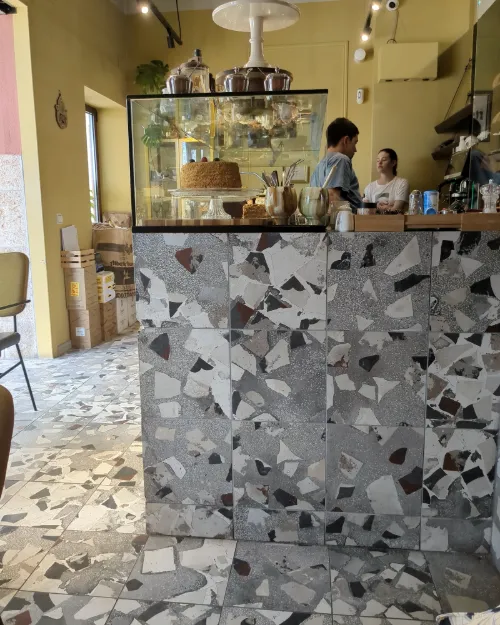
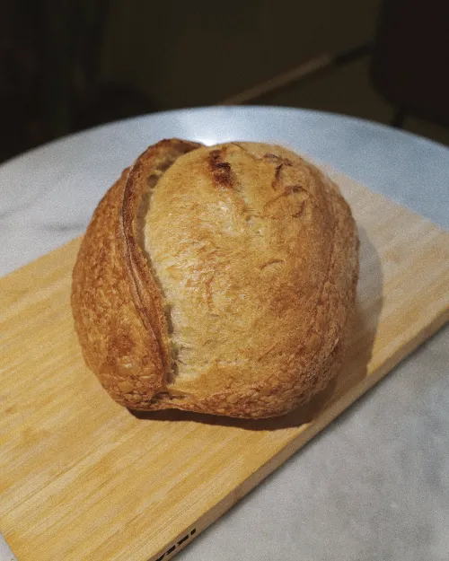

Niki & Niki · Dénia
En la esquina de la Plaça Fontanella.
Busca el toldo verde y las sillas amarillas. Estamos en una plaza peatonal a un paso del paseo marítimo y del puerto de Dénia, con mesas a los dos lados de la calle.
Todos los días, de 8:00 a 17:00

- Dirección
- Plaça Fontanella, 1
03700 Dénia (Alicante) - Horario
- Todos los días, de 8:00 a 17:00En festivos puede cambiar: lo avisamos en Instagram.
- Teléfono
- 605 45 84 74 · @nikiniki.bakery
Bueno saber
- Perros bienvenidos
- Bebida de avena para el café
- Equipo internacional: te atendemos en español, inglés y más idiomas
- Pan, tartas y bollería para llevar
Cuándo hay sitio
Entre semana, a primera hora la plaza está tranquila. Los fines de semana, de 12 a 15 h, es cuando más gente hay: ven sin prisa.
Entre semana
Fin de semana
Afluencia habitual según Google Maps.

Qué vas a encontrar
 VitrinaMedovik, tarta de queso, canelés…
VitrinaMedovik, tarta de queso, canelés… DesayunosHuevos turcos, shakshuka, syrniki
DesayunosHuevos turcos, shakshuka, syrniki
Pan y encargosHogazas enteras o por mitades, y tartas por encargo
¿Sin tiempo para pasar? También estamos en Glovo, para recoger o a domicilio.

También en Moraira
Por la mañana, lo mismo. De noche, cocina y vino natural.
En la Av. de la Paz de Moraira: panadería y café desde las 8:00 y, de miércoles a domingo, cenas de 16:00 a 22:00.